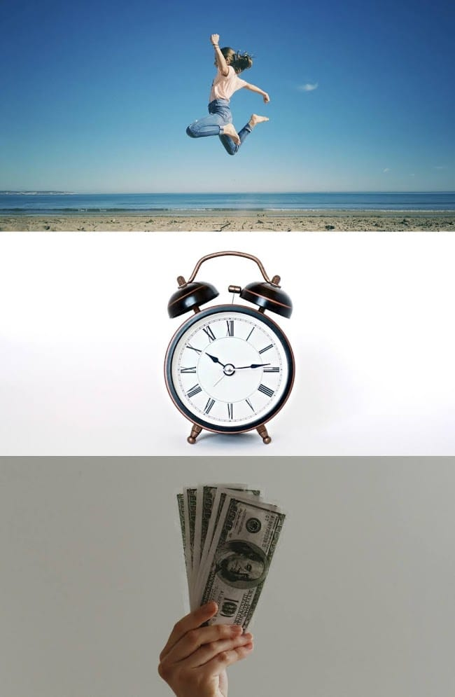

It’s been 10 years of Columns.
10 Years of Columns Massive Celebration
Yay! 🎉
Limitations & Economics
In college I learned that “economics” is the study of unlimited wants in a world with limited resources. Despite the fact that economics was boring1, the general concept is something I find endlessly fascinating. How can you get what you want out of life with what you have?
The economics of life boil down to how you choose to use your great personal resources: time, money, and energy.

Trading Resources
While we may not be able to exert much control over the total volume of these resources, we have some control over their proportions.
| Trade | Trade Forward | Trade Backward |
|---|---|---|
| Time ↔️ Money | Work more hours. Take a 2nd or 3rd job. Fix your own car. Paint your own house. | Work fewer hours. Try a part-time job. Pay someone to fix your car. Pay someone to paint your house. |
| Money ↔️ Energy | Pay someone to help you move. Buy medicine. Buy a better mattress. Get a babysitter. | Move yourself. Save the money and be sick. Couches can be beds, too. Never pay anyone for child care. |
| Energy ↔️ Time | Stay awake late at night. Wake up super early. Run. Never exercise. | Go to bed early. Sleep in! Walk. Exercise 60 minutes a day. |
10,000 Minutes
Did you know a week is 10,000 minutes long?1
How the hell do 10,000 minutes go by every week? What happened!? It sounds like so much!
…but then if you take a serious look at the things you have to do and the things you want to do, it becomes clear: the week isn’t enough.
An “Ideal” Week
In order to be “living right”, I’d want to spend:
- 56 hours - sleep 7.5 hours a night, which really means at least 8 hours dedicated to bedtime.
- 45 hours - work 40 hours week, which really means ~45 hours if you’re lucky with commutes and extra hours spent to get what needs done done.
- 11.5 hours - cook & eat your own meals, which I reckon is about 90 minutes day unless you’re doing fast food/convenience food for 2+ meals.
- 7 hours - maintain your relationship with your partner, which we’ll just call an hour a day for focused, direct relationship building. Playing games. Having real conversations. Going on dates.
- 14 hours - make memories with and enjoy your children. Playing toys with them. Teaching them things. Reading with them. Chasing them around yelling like you’re a monster.
- 14 hours - keeping your kids alive. Cleaning them. Making them eat. Taking them to and from places.
- 11.5 hours - maintain the stuff you own. Clean your house. Take your car into the shop. Fix that thing that broke. Update your computer. Do your laundry and dishes.
- 11.5 hours - pursue your own interests (have a hobby).
- 3.5 hours - exercise every other day for an hour.
- 3.5 hours - half an hour a day for bathing, grooming, dressing.
- 2.5 hours - shopping for the things you need to live.
We’ve got 168 hours to work with. I just knocked out 179 of those 168.
That’s not even accounting for things like the >3 hours a day people spend looking at their phones, seeing friends and other family, any of the things that can easily zap entire days (e.g. being sick and trying to fix it), or any sort of above-and-beyond activity (say like writing a Column).
Imagine if you took the time to actually read those End User License Agreements and Terms of Services before clicking ‘agree’.
A Realistic Week
- 49 hours - sleep 7 hours a night.
- 42.5 hours - work 40 hours. Live closer to your job.
- 7 hours - save a few hours eating stuff that’s bad for you.
- 21 hours - try to make memories with your kids while doing the things they need you to do to keep them alive.
- 2 hours - try to maintain your relationship primarily while doing other things (like cleaning)
- 21 hours - just zoning out. Thinking. Resting. Looking a screen for the purposes of escape or entertainment.
- 10 hours - maintaining the stuff you own, save a couple hours letting some broken things stay broken, letting some chores pile up.
- 7 hours - on that hobby of yours.
- 2.5 hours - only manage to work out 2 1/2 times each week.
- 3.5 hours - let’s just assume you bathe and groom per the plan.
- 2.5 hours - shopping.
168 hours with cut corners at every turn.
So What Can We Do?
The day has 24 hours. Pretending that’s not true leads to failure, or worse - burnout followed by failure.
Resource Usage Distribution
In an ideal world, you’d expend your resources in proportion with how they come to you naturally. If you make lots of money, you spend lots of money. If you’re naturally blessed with high levels of energy, you take up active hobbies. If you’ve got time, you take up time-intensive hobbies. If you’re out of alignment, see if you can trade one resource for another to get yourself back in alignment.
This is where I struggle. Almost all of my personal interests and hobbies traded time for money.
This blog costs me $12/year to maintain, and that’s just cause I want the fancy URL. But I’ve been writing this post for 2 hours now.
My recent “Wrapper-Lib” coding project cost me $0 but took probably ~25 hours to get to its current state.
More generally I reckon I’ve spent weeks-to-months of hours working on the Personal Data Warehouse concept, and it’s still not really what I want it to be.
The workbenches I’m building in my garage have been probably 40+ hours at this point when I consider the design time, trip to the store for materials, and the few hours I’ve spent actually building them thus far.
Be Realistic, but Ambitious
Don’t set yourself up for failure. You can only do so many things a day. You also don’t want to just “do nothing”. Live on the edge of your capability. The high edge. Not the low one.
Other Stuff
Personal Idiosyncrasies
I spend an unnecessary amount of time worrying about the ‘optimal’ way to characterize and assess things. The table above was the 4th iteration on presentation of “Trading Resources”. I still don’t love it. Frankly I don’t even really like splitting “time” from “energy”. I care about the application of energy, which requires time. This more aligns with the philosophy you’d find in something like ‘Your Money or Your Life’. Or, perhaps, go in the other direction and split out mental energy from physical energy. Why not include spiritual energy?
Does it really matter? Probably not.
But where do you draw the line? Some things have to matter. We’re all just doing the best we can with what we’ve got.
Consumer Tech Update
Mac
My computer is now 7+ years old. This is when I wrote about building it. I think it will be replaced soon. Probably with a Mac Mini or something similar.
iPad Pro
I used my iPad Pro to take a 3D scan of the workbench I’m building. I can’t believe this is a thing that I can do.
{% include video id=“AFLQPrlMWP4” provider=“youtube” %}
AirPods
I finally got some AirPods Pro. They are cool. I just apologized to my wife for my iPad playing music loudly while she was trying to get some work done. I said “sorry, my AirPods aren’t working”.
Turns out my AirPods were working and spatial audio is legit.
Top 5: Best Columns in 10 Years
5. #339 - Five Years Tracked
4. #391 - Seven Years Tracked
3. #196 - Seriously Just a Big List of Fantasy Football Team Names
2. #289 - Another Set of Brief Selections from My Moleskine
1. #401 - AIM Revisited
Quote:
Make decisions, then be done with them. Waffling is a cause of unhappiness. It also is unproductive. Use Satisficing. Stick with the plan. Unless something REALLY isn’t working, just keep going with it. This is also a core part of the Antifragile Planning Method.. My Notes I should read